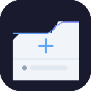

新しいタブを、あなただけのダッシュボードに。
Custom New Tab は、Chrome の新しいタブページを、カレンダー・お気に入りサイト・ニュース・Googleドライブをまとめたダッシュボードに置き換える拡張機能です。すべてのデータはお使いのブラウザ内で完結し、開発者のサーバーには一切送信されません。
本拡張機能はユーザーデータを収集・販売しません。Google API から取得した情報は新しいタブ上での表示のみに使用し、Limited Use 要件を含む Google API Services User Data Policy に準拠します。